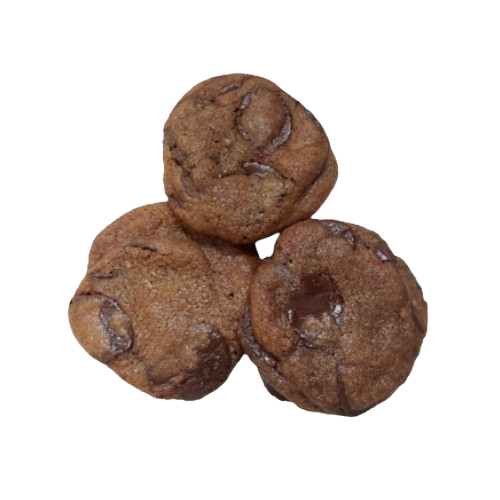
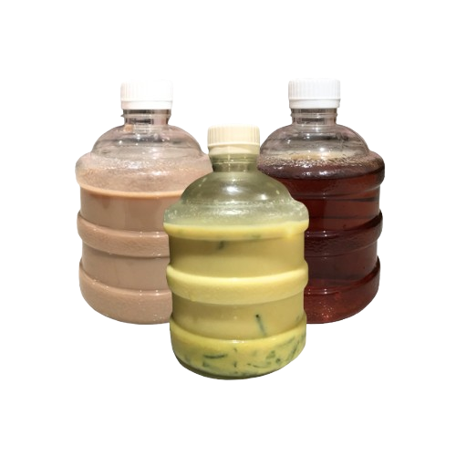
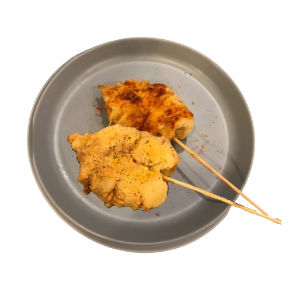

Sebelum penjualan pasti kami harus menyediakan produk yang ingin kami jual. Produk-produk yang kami tentukan,
antara lain; Cizz Cake (kue keju), Sotonk (cumi goreng tepung), Bag Charm (gantungan atau pesona
tas) Phone Strap (gantungan handphone), Kolam Ikan (cangkir teh), Tote Bag AMIN (tas jinjing), Tas
Kaleng Kerupuk (tas jinjing), Kukizz (kantong cookies), serta Minoeman Galon (minuman;
milk tea,
lemon tea, dan cendol). Cizz cake sebagai tugas IL IPA yaitu bioteknologi, kami pilih keju yaitu
bahan utama cizz cake [kue keju]. Sotonk (cumi goreng tepung) sebagai tugas IL Prakarya yaitu
memasak makanan dari bahan utama/dasar hasil peternakan/hasil perikanan, kami memilih cumi yaitu bahan utama
sotonk [cumi goreng tepung]. Untuk membuat cizz cake [kue keju] kami harus tau membuat cream
cheese-nya karena itu merupakan bahan utama dan tugas IL IPA bioteknologi.
| No. | Foto Produk | Nama Produk | Deskripsi Produk | Ide dan Eksekusi | Pengemasan Produk |
| 1. |  |
Tas AMIN | Tote bag atau tas jinjing bermodelkan gambar lucu yang menanyakan, apakah sekarang waktunya untuk panik? Hal ini cukup relatable di kalangan anak muda, apa lagi ditengah-tengah ribuan tugas dan proyek yang melanda. | Untuk tas-tas setiap produk PO, pada awalnya kami mengidekan untuk menjual hal yang dapat berguna secara jangka panjang bagi para pembeli. Salah satu hal yang paling pas menurut kami adalah tas jinjing atau dapat disebut juga tote bag. Namun, agar tidak kalah bersaing dengan produk-produk milik kelompok lain, kami menambahkan desain khusus pada tas kami. Untuk Tas AMIN, kami menggambar desain air muka panik bertuliskan “Is it time to panic?” pada Tas AMIN (tote bag). Karena penjualan tote bag dapat berisiko tidak laku akibat bersaing dengan kelompok lain, kami putuskan produk ini menjadi produk untuk PO. | Plastik |
| 2. |  |
Tas Kaleng Kerupuk | Tas bermodelkan kaleng kerupuk yang biasanya terdapat pada warung-warung makan sederhana. Panjang tas berukuran 35 dan lebar berukuran 37. Desainnya unik, lucu, dan cocok dengan pakaian untuk melokal ataupun pakaian santai. Tas kaleng kerupuk ini berbahan kain yang halus dan dapat memuat banyak isi. | Sama seperti Tas AMIN, kami perlu menambahkan desain khusus pada tas kami. Karena toko kami identik dengan toko galon juga toko serba ada, maka kami mencetuskan ide untuk me-resell tas bermodel kaleng kerupuk secara harfiah. Menurut kami, tas ini akan menarik banyak perhatian pembeli karena desainnya yang unik dan tidak biasa. | Plastik |
| 3. |  |
Kolam Ikan (cangkir) | Gelas mini untuk minum teh dengan hiasan ikan di dalamnya. Ikan yang bertekstur timbul memberi kesan realistis menyerupai kolam ikan. | Untuk produk Kolam Ikan, kami mencetuskan produk ini karena desainnya yang unik. Pembeli dapat menggunakan cangkir ini sebagai cangkir untuk minum teh karena ukurannya yang cukup kecil. Desain ikan yang timbul dapat menambah kesan ketika pembeli minum teh. Namun, karena juga berisiko tidak laku, kami memutuskan untuk menjadikannya produk PO. | Plastik |
| 4. |  | Kukizz | Kukis ini berbahan dasar gula merah dan coklat. Kukis ini memiliki tekstur yang sangat garing di bagian luar dan lembut serta lezat di bagian dalam. | Menurut kami, kukis akan menjadi salah satu makanan yang digemari oleh pembeli bazar. Terutama kukis yang bertekstur crunchy di luar dan lembut di dalam. Kami berusaha untuk membuat kukis yang bertekstur seperti itu dan mencari strategi agar tidak akan berubah menjadi keras. | Kantong kain |
| 5. |  |
Cizz Kek | Cheese cake atau kue keju dengan tekstur kue lembut nan manis dan crust renyah yang saling berkomplemen. Kami menyediakan dua topping yaitu selai bluberi dan stroberi. | Sebagai produk bioteknologi untuk memenuhi materi IPA, kami membuat cheese cake dengan cream cheese sebagai bahan dasarnya. Cream cheese ini pun kami peroleh dari hasil olahan susu yang dicampur dengan air lemon di mana memiliki kandungan citric acid di dalamnya, sehingga dapat menghasilkan cream cheese. Percobaan pertama kami di dapur sekolah berjalan dengan lancar, kami dapat menghasilkan cream cheese dengan kelembutan yang cukup sesuai. Namun, ada percobaan kembali di mana cream cheese yang dihasilkan terlalu keras akibat terlalu banyak air lemon yang ditambahkan. Percobaan-percobaan selanjutnya kami lakukan dengan hati-hati agar tidak mengulang kesalahan yang sama. Pada akhirnya yakni H-1 bazar, kami dapat memanggang cheese cake dengan kualitas baik dan rasa yang cukup lezat. | Kemasan kue mika |
| 6. |  | Minoeman | Kami menyediakan 3 jenis minuman, yaitu; teh lemon yang segar, teh susu yang manis serta tebal, dan cendol alpukat dengan rasa gula merah yang memikat serta cendol yang seru untuk dinikmati. | Minuman adalah hal umum yang dapat dijual di bazar. Bagaimana setiap kelompok menyajikanlah yang menjadi pembeda. Agar tampilan menjadi lebih menarik, kami menuang minuman-minuman yang kami jual (teh lemon, teh susu manis, dan cendol) ke dalam botol galon mini. | Botol galon mini |
| 7. |  |
Bag Charm | Bag charm dengan berbagai model dan bentuk yang dapat digunakan sebagai gantungan hias. Kami menyediakan charm berukuran kecil, besar, serta charm photo frame yang bisa diselipkan foto ke dalamnya. | Kami mengeluarkan ide untuk pembeli dapat merancang, menghias, atau menyatukan bag charm atau gantungan kunci mereka sendiri. Maka dari itu, kami hanya menyediakan charms dengan ring gantungan kunci. Pembeli dapat memilih 2-3 charms.Kami memiliki tujuan agar siswi dapat merancang gantungannya dengan kekreatifan dan kegemaran mereka sendiri. | Plastik |
| 8. |  |
Phone Strap | Phone strap, sebuah benda berupa untaian manik-manik yang dapat digunakan sebagai gantungan hp ataupun hiasan hp. | Phone strap pun merupakan benda yang cukup trending di kalangan siswi. Maka kami putuskan untuk menjual phone strap dengan model khas yaitu bermodel ubur-ubur serta dengan manik-manik yang berwarna-warni. | Plastik |
| 9. |  | Sotonk | Kami menjual Sotonk yang berbahan dasar cumi sotong (cumi berbentuk pipih). Sotonk disajikan dengan digoreng seperti cumi goreng tepung, serta ditusuk menggunakan tusuk sate. Kami menyediakan 2 jenis bumbu untuk menambah citra rasa Sotonk, yaitu balado, barbeque, dan rumput laut. | Kami mencetus produk makanan Sotonk (cumi goreng tepung) sebagai tugas IL Prakarya yaitu memasak makanan dari bahan utama/dasar hasil peternakan/hasil perikanan. Kami memilih sotong sebagai bahan dasar produk makanan kami. Untuk produk ini, kami melakukan banyak percobaan dalam memasak Sotonk dan banyak juga kegagalan yang kami alami. Percobaan pertama kurang berhasil karena sotong kurang matang dan bumbu yang digunakan belum pas. Saat melakukan percobaan kembali, kami berhasil memasak Sotonk sesuai dengan apa yang kami rencanakan, yaitu sotong yang matang di dalam, goreng tepung yang membaluti krispi dan berwarna coklat keemasan, serta rasa gurih yang lezat. | Karton |
Dalam strategi penjualan, tentunya penjual menargetkan banyak ketertarikan konsumen terhadap produk yang
diperjualbelikan. Dengan begitu, penjual harus tahu betul model promosi atau pengiklanan produk seperti apa yang
akan menarik perhatian target pasar agar produknya dapat laris dengan manis. Umumnya, penjual hanya perlu
mempertimbangkan produk apa yang sekiranya banyak khalayak butuhkan saat itu (permintaan/demand), lalu
dapat memilih target pasar dengan menjual dan mempromosikannya ke influencer-influencer dengan
audiens tertentu, seperti beauty influencer ataupun food blogger. Namun, proyek ini tidak memberi
kebebasan untuk memilih target pasar sesuai dengan apa yang ingin kami jual. Sejak awal, kami tahu bahwa
sebagian besar target penjualan kami adalah siswi-siswi Sekolah Santa Ursula Jakarta karena waktu yang
disisihkan untuk kunjungan pembeli eksternal serta orang tua hanya berdurasi 30 menit. Dapat dibilang bahwa
siswi-siswi Sekolah Santa Ursula Jakarta merupakan sebagian besar target pasar kami. Maka dari itu, kami perlu
tahu ragam promosi yang tepat untuk penjualan produk kami guna menarik perhatian siswi-siswi Sekolah Santa
Ursula yang berperan sebagai target pasar.
Iklan itu sendiri memiliki arti sebagai media informasi berisikan pesan yang memiliki tujuan untuk
mengajak orang membeli atau menggunakan barang maupun jasa yang ditawarkan. Singkatnya, untuk mempromosikan
dagangan. Tujuan tersebut dapat diraih dengan berbagai jenis iklan. Bisa hanya berupa tagline, tulisan
yang dimuat dalam koran, majalah, bisa juga berupa poster dan video dengan desain yang menarik. Dari berbagai
jenis dan bentuk iklan, kami setuju bahwa cara pengiklanan paling tepat adalah dengan menonjolkan visual
wise
atau dapat dibilang dengan tampilan desain grafis iklan itu sendiri. Iklan akan lebih menangkap mata pembeli
jika memiliki desain yang unik dan bagus secara estetika sehingga produk pun mendapat perhatian. Dari awal
perencanaan, kami setuju untuk melakukan promosi dan merancang desain iklan promosi dengan cara fun dan
berwarna
agar secara tampilan tidak membosankan serta dapat lebih mudah menentukan produk yang menarik dan kekinian
karena korelasi antara nama toko, tema desain iklan, dan produk yang dijual adalah hal yang tidak kalah penting.
Toko kami memiliki nama ‘Toko AMIN’ yang diambil dari inisial setiap anggota, (Athena, Mazel, Ivi, Naira). Ide
yang muncul ketika memerhatikan konklusi nama toko kami adalah toko-toko bermodel toserba (toko serba ada), toko
bahan baku, sampai bahkan toko galon yang akhirnya menjadi branding toko kami.
Toko galon identik dengan warna-warna retro yang bermacam-macam, terutama warna biru. Selain itu,
identik dengan tipikal pembawaan para pedagang toko galon yang terkesan ‘unik’ atau–jika menggunakan istilah
gaul–‘jamet’. ‘Jamet’ itu sendiri memiliki arti seperti suatu gaya yang norak namun tetap fun. Dengan
dasar
konsep seperti itu, kami menjadi lebih mudah untuk merancang logo, poster, hingga slogan untuk mempromosikan
produk yang kami jual. Hal-hal promosi yang dapat kami jabarkan, antara lain;
Untuk logo, kami menggunakan warna-warna cerah dan beragam serta fonta yang funky guna
menonjolkan
kesan eksentrik. Untuk latar belakang fonta, kami tambahkan latar jingga cerah yang memiliki gambar-gambar kecil
produk kami.
Kami menggunakan desain tampilan toko galon secara harfiah untuk poster produk-produk kami. Konsep
toko galon ini pun dapat kami kembangkan kekreatifannya, seperti ketika kami belum meluncurkan produk kami di
akun sosial media, kami bisa mengunggah terlebih dahulu desain toko galon yang masih tutup:
Dengan demikian, Toko AMIN memiliki tujuan untuk mempromosikan produk-produk dengan cara yang unik dan menyenangkan sehingga konsumen tidak bosan dengan segala promosi yang secara terus-menerus dilakukan selama proses mempromosikan bazar.
Untuk perencanaan booth, pada awalnya, kami merencanakan untuk menggunakan kain batik coklat sebagai taplak meja booth kami. Pada awalnya juga, kami merencanakan untuk dekorasi booth kami menggunakan chalkboar atau papan tulis kapur untuk menuliskan nama toko kami, namun tidak ada anggota yang memiliki kebutuhan tersebut. Akan tetapi, anggota kelompok kami memiliki papan tulis kecil berwarna biru yang cocok, sehingga dapat kami gunakan untuk menulis “AMIN” untuk mengindikasikan bahwa booth ini adalah booth kami. Lalu, kami menggunakan rak kecil untuk menampilkan Phone Strap, menggunakan talenan kayu untuk menampilkan Cheese Cake Setelah itu, kami menggunakan kotak plastik untuk menampilkan Bag Charm. Juga, kami menampilkan sisa produk PO kami (5 Kolam Ikan & 1 Tas Kaleng Kerupuk) di meja. Lalu kami menggunakan stiker AMIN untuk menjadi dekor pada produk-produk kami. Terakhir, strategi yang kami lakukan untuk menarik konsumen adalah dengan memberikan gratis minuman soda kepada pembeli yang membeli 2 atau lebih produk kami.